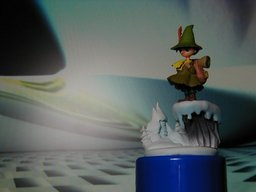

K&M カプセルフィギュア ムーミン谷の冬 スナフキン

K&M (海洋堂＆ムービック)のカプセルフィギュア、ムーミン(ミニヴィネットシリーズ)の中の「ムーミン谷の冬」です。高さは雪山も合わせて 8cm ぐらいです。首は取ることができます。他の方の写真と比べると私の持っているスナフキンは首が長いようで、そこが気に入ってます。 アニメ作品のムーミンは新しいほうの絵がとても好きでしたが、話については、あのマッタリ感が 30 分続くのが少し辛かったです。 背景は Winamp の MilkDrop プラグインを WinShot したものです。 更新：2006-04-20 初公開：2006年04月20日 20:27:05 最新版：2006年04月20日 20:27:05
Trackbacks: 《爆弾の結末》 from 美咲 恋方 まあ月末は売上が上がらなくて焦るホストが多い特に新人は売上上げないと速攻クビだ。多分今回のもそうゆう新人ホストの一人だと思う。 受信： 2006-05-02 18:27:40 (JST)
Links: 海洋堂: http://www.kaiyodo.co.jp/ (hbm) ムービック: http://www.movic.jp/ (hbm) MilkDrop: http://www.milkdrop.co.uk/ (hbm) WinShot: http://www.woodybells.com/winshot.html (hbm)